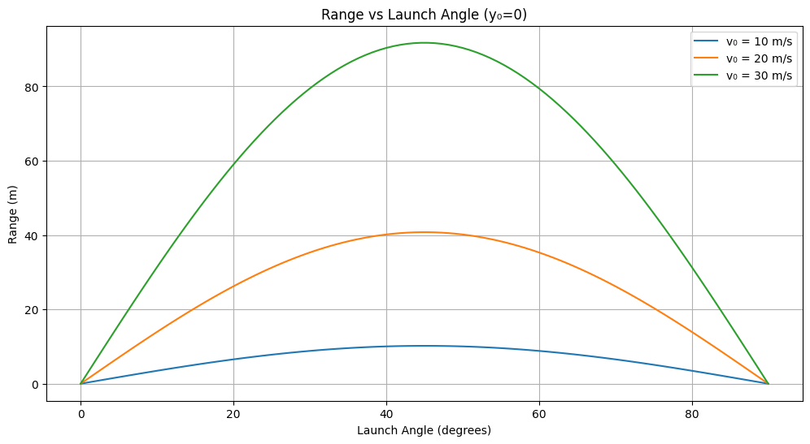
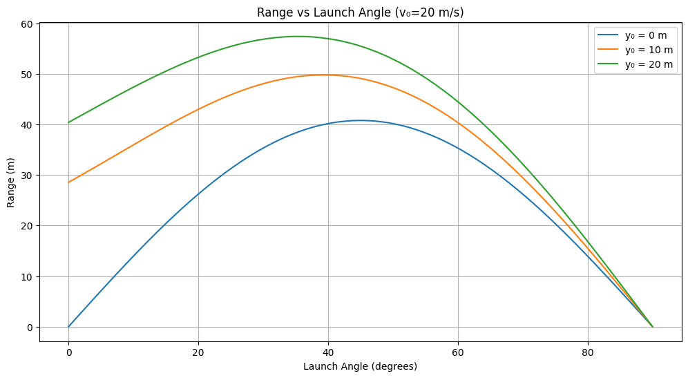
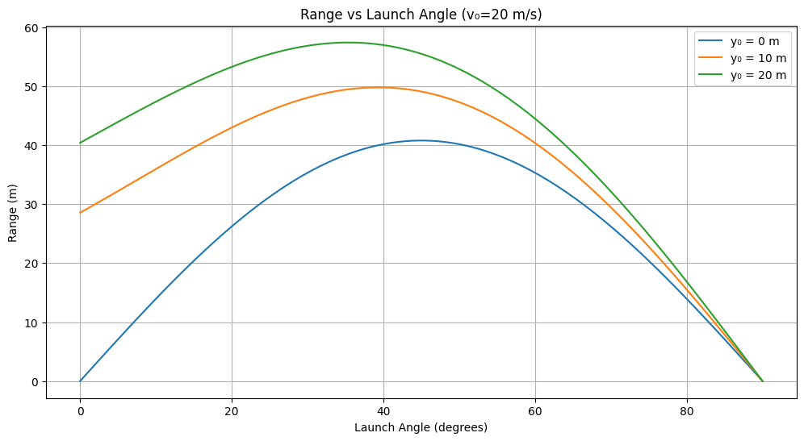
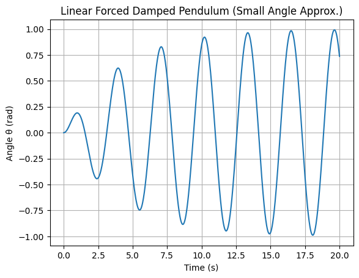

Mathematical Formulation of Projectile Motion
1.1 Governing Equations of Motion
Using Newton’s Second Law, considering only gravitational force (neglecting air resistance):
This results in two differential equations:
-
Horizontal motion:
[ \frac{d^2x}{dt^2} = 0 ] -
Vertical motion:
[ \frac{d^2y}{dt^2} = -g ]
2. Solving the Equations
Given initial conditions:
- Initial position: \((x_0, y_0) = (0, y_0)\)
- Initial velocity: \( v_0 \) at an angle \( \theta \)
- Velocity components:
[ v_{0x} = v_0 \cos\theta, \quad v_{0y} = v_0 \sin\theta ]
The general solutions are:
3. Time of Flight
The time of flight is found by solving \( y(t) = 0 \) (when the projectile returns to its initial height \( y_0 \)).
For \( y_0 = 0 \):
Solving for \( t \):
For \( y_0 \neq 0 \), solving the quadratic equation \( y(t) = 0 \):
4. Range Calculation
The horizontal range \( R \) is:
For \( y_0 = 0 \):
For \( y_0 \neq 0 \):
where \( t \) is given by the quadratic formula above.
5. Maximum Height
The maximum height occurs when vertical velocity becomes zero (\( v_y = 0 \)):
For \( y_0 \neq 0 \):
6. Optimal Launch Angle
The launch angle that maximizes the range for \( y_0 = 0 \) is:
For \( y_0 > 0 \), the optimal angle is slightly less than \( 45^\circ \), given by:
where \( k \) is a proportionality constant.
These equations provide a complete theoretical framework for projectile motion analysis. Would you like further modifications or additional explanations? 
1.2. Theoretical Analysis of Range
The range \( R \) of a projectile launched at an angle \( \theta \) with initial velocity \( v_0 \) is given by:
where:
- \( v_0 \) is the initial velocity,
- \( g \) is the gravitational acceleration,
- \( \theta \) is the angle of projection.
Key Observations:
- Dependence on \( \theta \):
- The range is maximized when \( \sin 2\theta \) is maximized, which occurs at \( \theta = 45^\circ \).
- The function is symmetric around \( 45^\circ \), meaning \( R(\theta) = R(90^\circ - \theta) \).
-
Beyond \( 45^\circ \), increasing \( \theta \) decreases the horizontal component of velocity, reducing \( R \).
-
Effect of Initial Velocity \( v_0 \):
- Since \( R \propto v_0^2 \), doubling \( v_0 \) quadruples the range.
-
A higher velocity results in a greater overall displacement.
-
Effect of Gravity \( g \):
- Since \( R \propto \frac{1}{g} \), an increase in gravitational acceleration decreases the range.
-
On planets with lower gravity (e.g., Moon, Mars), projectiles travel farther for the same \( v_0 \).
-
Effect of Initial Height \( y_0 \):
- If the projectile is launched from a height \( y_0 > 0 \), range is extended due to a longer time of flight.
- The range equation is modified to account for this additional height:

3. Observations from Graphs
- Effect of Velocity:
-
The peak of the curve shifts upward as \( v_0 \) increases, confirming \( R \propto v_0^2 \).
-
Effect of Height:
- When \( y_0 \) increases, the range extends beyond \( \theta = 45^\circ \).
- The maximum range shifts to a slightly lower angle (e.g., \( 40^\circ \) instead of \( 45^\circ \)).
4. Limitations & Extensions
Limitations:
- Ignores air resistance: In reality, air drag reduces range.
- No wind effects: Wind can increase/decrease range depending on direction.
- Flat terrain assumption: Uneven ground alters projectile trajectory.
Extensions:
- Air Resistance Model:
[ F_{\text{drag}} = \frac{1}{2} C_d \rho A v^2 ] -
Implementing numerical methods to model drag forces.
-
Wind Influence:
- Adding lateral forces for real-world accuracy.
5. Conclusion
- The range follows a parabolic trend with respect to \( \theta \), maximizing at \( 45^\circ \).
- Increasing \( v_0 \) quadratically increases range.
- Higher launch height shifts the optimal angle below \( 45^\circ \).
- Gravity acts as an inverse factor, reducing the range when increased.
This provides a solid foundation for studying real-world projectile motion, from sports science (basketball, soccer) to aerospace applications (missile trajectory planning).
1.3 # Investigating the Range as a Function of the Angle of Projection
Motivation
Projectile motion, while seemingly simple, offers a rich playground for exploring fundamental principles of physics. The problem is straightforward: analyze how the range of a projectile depends on its angle of projection. Yet, beneath this simplicity lies a complex and versatile framework. The equations governing projectile motion involve both linear and quadratic relationships, making them accessible yet deeply insightful.
What makes this topic particularly compelling is the number of free parameters involved in these equations, such as initial velocity, gravitational acceleration, and launch height. These parameters give rise to a diverse set of solutions that can describe a wide array of real-world phenomena, from the arc of a soccer ball to the trajectory of a rocket.
Theoretical Foundation
Derivation of Governing Equations
We begin with Newton's second law of motion, considering only gravity as the acting force (neglecting air resistance):
This gives us two differential equations: - Horizontal motion (x-axis): [ d^2x/dt^2 = 0 ] - Vertical motion (y-axis): [ d^2y/dt^2 = -g ]
Solving these with initial conditions: - Initial position: \( (0, y_0) \) - Initial velocity: \( v_0 \) at angle \( \theta \) - Velocity components: \( v_{0x} = v_0 \cos\theta \), \( v_{0y} = v_0 \sin\theta \)
Equations of Motion: - [ x(t) = v_0 \cos\theta \cdot t ] - [ y(t) = y_0 + v_0 \sin\theta \cdot t - \frac{1}{2} g t^2 ]
Range Calculation
The range (\( R \)) is the horizontal distance when the projectile returns to launch height (\( y=y_0 \)).
For \( y_0 = 0 \): [ 0 = v_0 \sin\theta \cdot t - \frac{1}{2} g t^2 ] Solving for time: [ t = \frac{2v_0 \sin\theta}{g} ] Thus, the range is: [ R = v_0 \cos\theta \cdot \frac{2v_0 \sin\theta}{g} = \frac{v_0^2 \sin 2\theta}{g} ]
For \( y_0 \neq 0 \): Using the quadratic equation to find time: [ t = \frac{v_0 \sin\theta + \sqrt{(v_0 \sin\theta)^2 + 2 g y_0}}{g} ] Then the range: [ R = v_0 \cos\theta \cdot t ]

Practical Applications
1. Sports Science:
- Soccer and basketball: Finding optimal angles for kicks or shots.
- Golf: Accounting for lift and spin effects on the projectile.
2. Military Applications:
- Artillery calculations: Determining best angles for projectile range.
- Rocket launches: Adjusting for gravity and atmospheric drag.
3. Aerospace and Space Exploration:
- Spacecraft landings: Adjusting for different planetary gravities.
- Satellite deployments: Managing launch angles and velocities.
Limitations and Extensions
Limitations:
- Ignores air resistance (significant for fast-moving objects).
- No wind effects (crosswind alters trajectory).
- Assumes level ground (terrain variations affect range).
Extensions:
- Modeling air resistance: [ F_{\text{drag}} = \frac{1}{2} C_d \rho A v^2 ]
- Wind effects: Lateral forces modifying trajectory.
- Numerical simulations: Using differential equations for real-world modeling.
1.4
Projectile motion is governed by Newton's second law:
For a projectile under gravity, the equations of motion are:
Equations of Motion:
- Horizontal Motion: [ x(t) = v_0 \cos\theta \cdot t ]
- Vertical Motion: [ y(t) = y_0 + v_0 \sin\theta \cdot t - \frac{1}{2} g t^2 ]
Time of Flight:
The time \( t \) when the projectile returns to the same height \( y_0 \) (assuming \( y_0 = 0 \)) is obtained by solving:
Range Formula:
The horizontal range \( R \) is given by:
Substituting \( t = \frac{2 v_0 \sin\theta}{g} \):
If the projectile is launched from an initial height \( y_0 \neq 0 \), the range is:
 

2.1.1
Problem 2
1.1 Task 1: Theoretical Foundation 🔹 Differential Equation (Forced Damped Pendulum): 𝑑 2 𝜃 𝑑 𝑡 2 + 𝛽 𝑑 𝜃 𝑑 𝑡 + 𝜔 0 2 sin ( 𝜃 ) = 𝐴 cos ( 𝜔 𝑡 ) dt 2
d 2 θ +β dt dθ +ω 0 2 sin(θ)=Acos(ωt) For small angles:
sin ( 𝜃 ) ≈ 𝜃 ⇒ 𝑑 2 𝜃 𝑑 𝑡 2 + 𝛽 𝑑 𝜃 𝑑 𝑡 + 𝜔 0 2 𝜃 = 𝐴 cos ( 𝜔 𝑡 ) sin(θ)≈θ⇒ dt 2
d 2 θ +β dt dθ +ω 0 2 θ=Acos(ωt)
